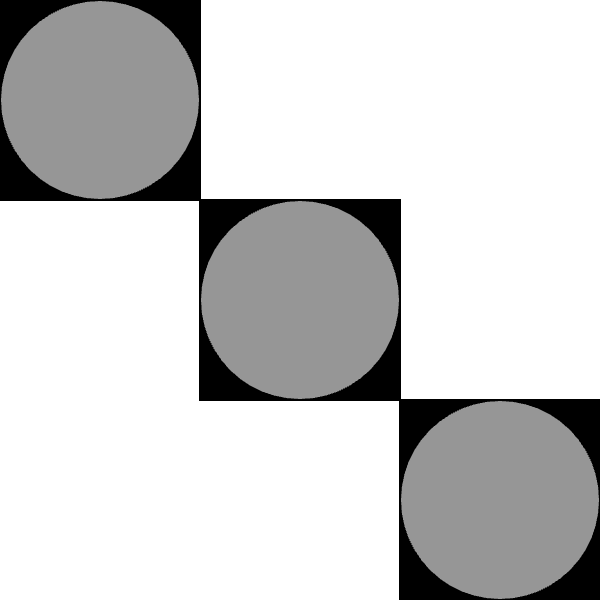

Your sketch:
Copy and paste your code from exercise2-3/sketch.js into exercise3-2/sketch.js. Edit your code to use rectMode(CENTER) to draw the squares. This will allow you to use the same locations for the squares and circles.
When you are done, check your work using check-exercise3-2.html.
Expected output:

You only need to edit sketch.js.
rectMode(CENTER) before calling any shape functions.Some useful links in the p5.js documentation: